Mammakarzinom
Ziele
- Relevanz in Zahlen
- Definition
- Risikofaktoren/Prävention
- Früherkennung
- Diagnose
- Histologie
- Staging
- Behandlugn
Wer ist betroffen?
70.5501
Neu erkrankungen jährlich. Brustkrebs ist mit Abstand die häufigste Krebserkrankung der Frau.
Eine von acht Frauen
erkrankt im Laufe ihres Lebens an Brust krebs

Quelle: Das Zentrum für Krebsregisterdaten (ZfKD) im Robert Koch-Institut1
Eine von sechs
vor dem 50. Lebensjahr

Quelle: Das Zentrum für Krebsregisterdaten (ZfKD) im Robert Koch-Institut1

Quelle: Das Zentrum für Krebsregisterdaten (ZfKD) im Robert Koch-Institut1
Relative 10-Jahres-Überlebensrate 83%
- Seit Ende der 1990er Jahre gehen die Sterberaten an Brustkrebs kontinuierlich zurück
- In den letzten 10 Jahren am stärksten bei Frauen zwischen 60 und 69 Jahren.
Krebs in Deutschland für 2019/20202
1% Männer2
Geschichte
3500 – 400 v. Chr.
1800–1899
William Halsted
Thomas Beatson
- Wilhelm Conrad Röntgen (1845–1923)
- beschrieb im Jahr 1896 das Konzept der Röntgenstrahlen.
1900–1999
- 1930 wurde die Strahlentherapie als Alternative zur radikalen Mastektomie eingeführt.
- Im Jahr 1948 berichtete Robert McWhirter über die Ergebnisse der kombinierten Anwendung einer einfachen Mastektomie, gefolgt von Strahlentherapie.4
Damals
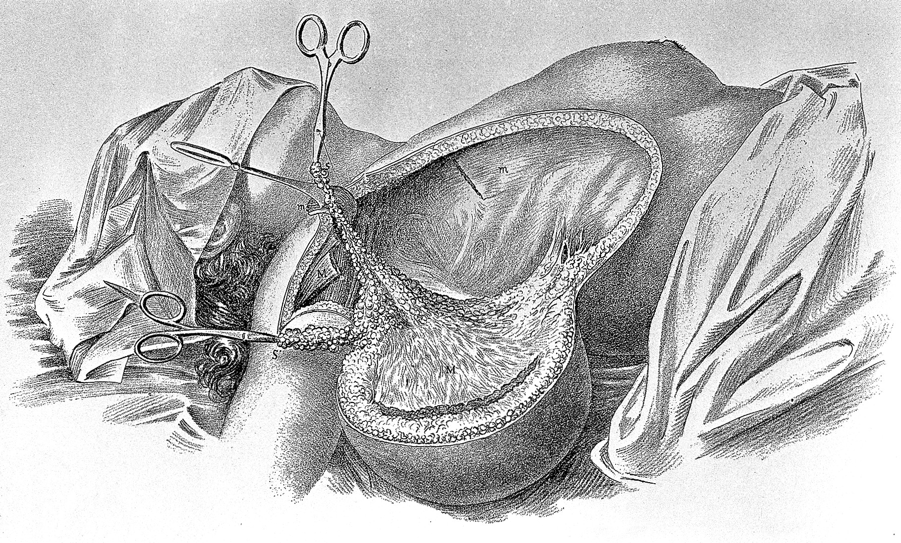
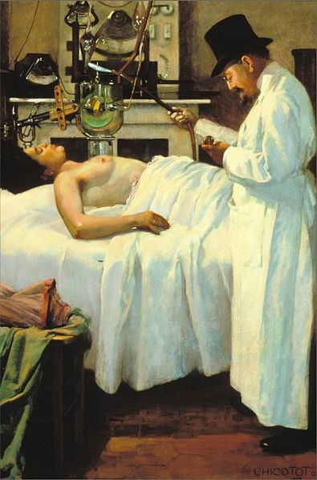
Heute
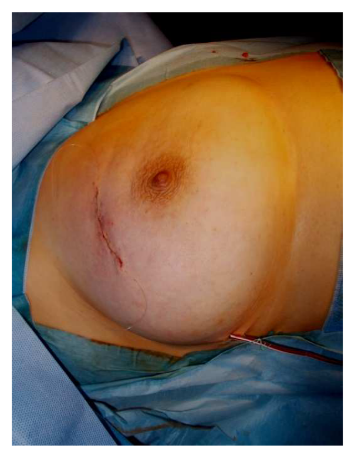
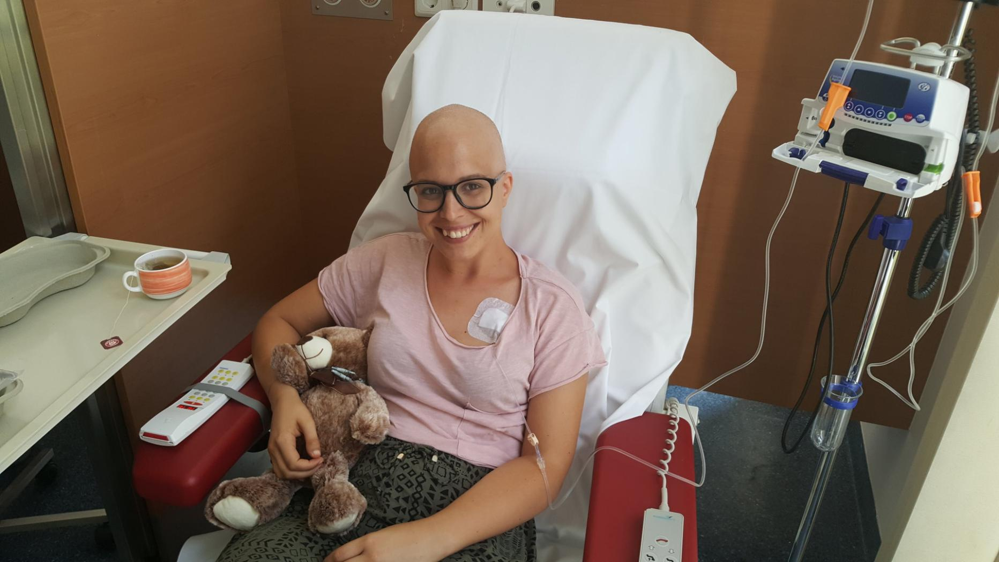
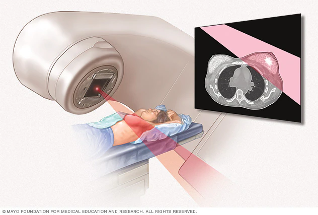
Was ist Brustkrebs?
Anatomie
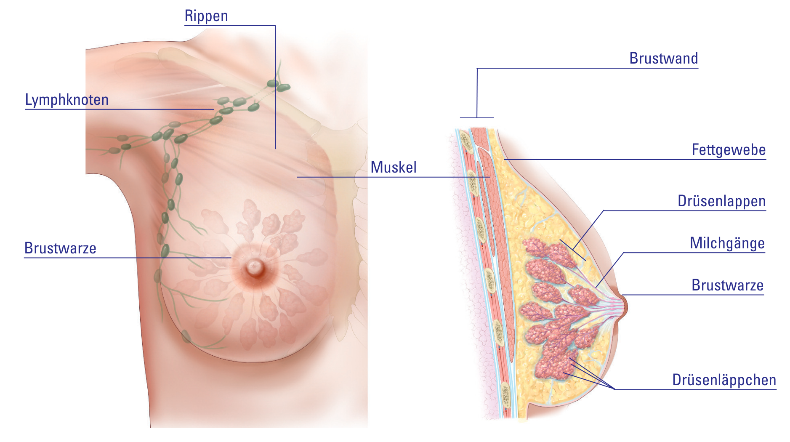Bild: Eine Entscheidungshilfe für Frauen mit einem DCIS12
Histologie
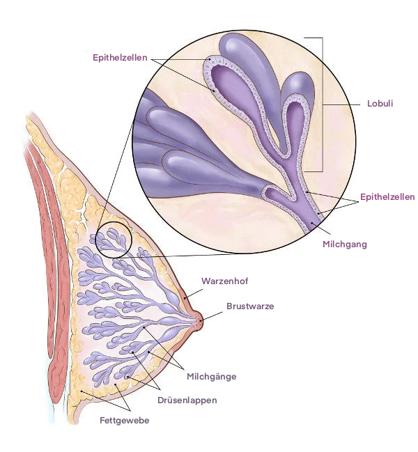
American Cancer Society14
Histologische Evolution
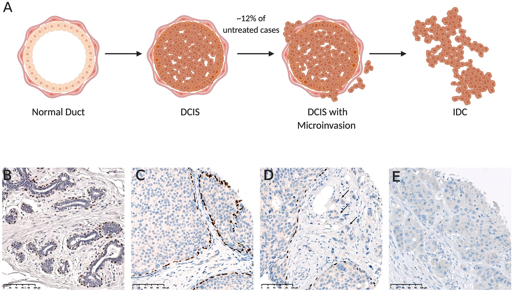Molecular Changes Accompanying Disease Progression15
Krieg ich Brustkrebs?
Risikofaktoren
- Weiblich
- Höheres Alter
- Genetisch
- The Angelina Jolie effect16
- Trägerin einer BRCA1/2-Mutation
- 2013 Prophylaktische beidseitige Mastektomie (PBM)
- The Angelina Jolie effect16
Familiäres Mammakarzinom
wenn in einer Linie der Familie
- mindestens 3 Frauen an Brustkrebs erkrankt sind
- mindestens 2 Frauen an Brustkrebs erkrankt sind, davon 1 vor dem 51. Lebensjahr
- mindestens 1 Frau an Brustkrebs und 1 Frau an Eierstockkrebs erkrankt sind - mindestens 2 Frauen an Eierstockkrebs erkrankt sind
- mindestens 1 Frau an Brust- und Eierstockkrebs erkrankt ist
- mindestens 1 Frau mit 35 Jahren oder jünger an Brustkrebs erkrankt ist
- mindestens 1 Frau mit 50 Jahren oder jünger an bilateralem Brustkrebs erkrankt ist
- mindestens 1 Mann an Brustkrebs und eine Frau an Brust- oder Eierstockkrebs erkrankt sind
Kann ich es vermeiden?
- Eine frühe Erstgeburt
- Vor dem Alter von 20 oder 25 Jahren
Senkt das Risiko um bis zu 50%17
Früherkennung
Klinische Untersuchung und Mammographie
Klinische Untersuchung
- Ab 30 Jahre einmal jährlich19
Bild aus “The Stanford Medicine 25”20
Mammographie
- Alter zwischen 50 und 69 Jahren (alle 2 Jahre)
- Ab dem 01. Juli 2024 bis 75
- Vorteile: Erhöht die Heilungschancen
- Nachteile: Überdiagnose
- Manche Frauen Versterben bevor sich ein Tumor bemerkbar machen kann
- Mammographie Screening Programm

Entscheidungshilfe Mammographie-Screening-Programm21
BI RADS
Breast Imaging-Reporting and Data System
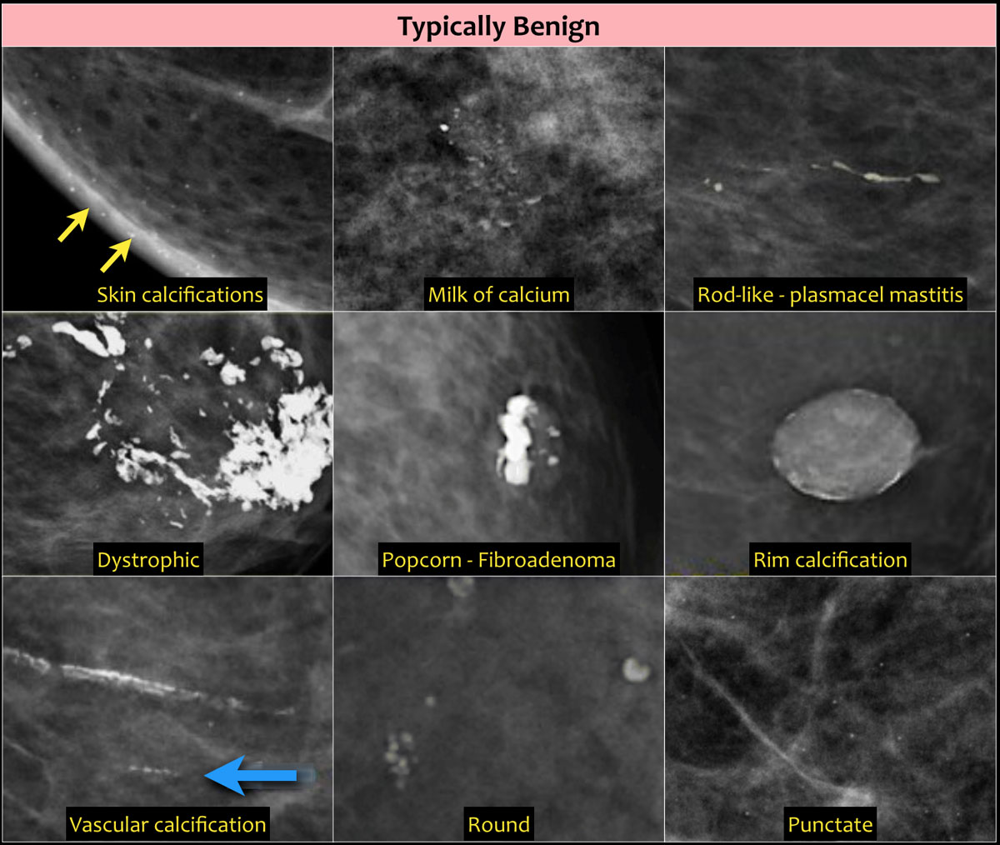 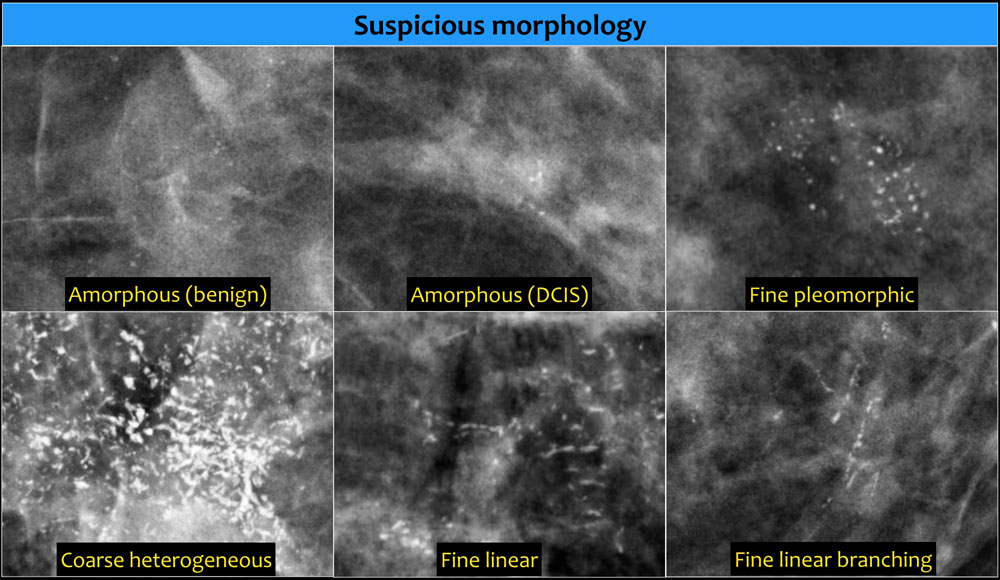
Bilder: The radiology assistant23
Ist es Krebs?
Basisdiagnostik
- Anamnese und klinische Brustuntersuchung
- Mammographie
- Ultraschall
Diagnostische Sicherung
Die histologische Abklärung von Befunden soll durch24
- Stanzbiopsie
- Vakuumbiopsie
- Ausnahme: offene Exzisionsbiopsie
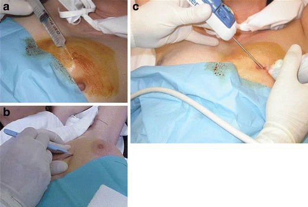
Das K Wort
Histologie
- DCIS
- Brustkrebs-Frühform (Präkanzerös)
- Häufig im Rahmen der Früherkennung
- Andere: ADH, LIN, FEA
- IDC
- Andere: Muzinöses, Tubuläres, Medulläres, Inflammatorisches…
Invasive Mammakarzinome
- Paget
- Phylloides-Tumoren
- Angiosarkom
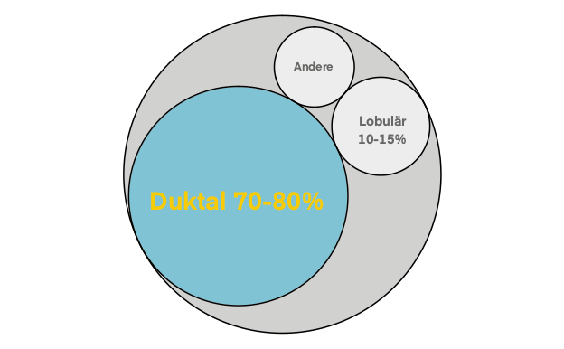
Brustkrebs Diagnose: Klassifikation28
IDC ist nicht = IDC
Tumorbiologie
Primärdiagnostik sollen24
Östrogen- und Progesteronrezeptor
Human Epidermal Growth Factor Receptor 2
Grading
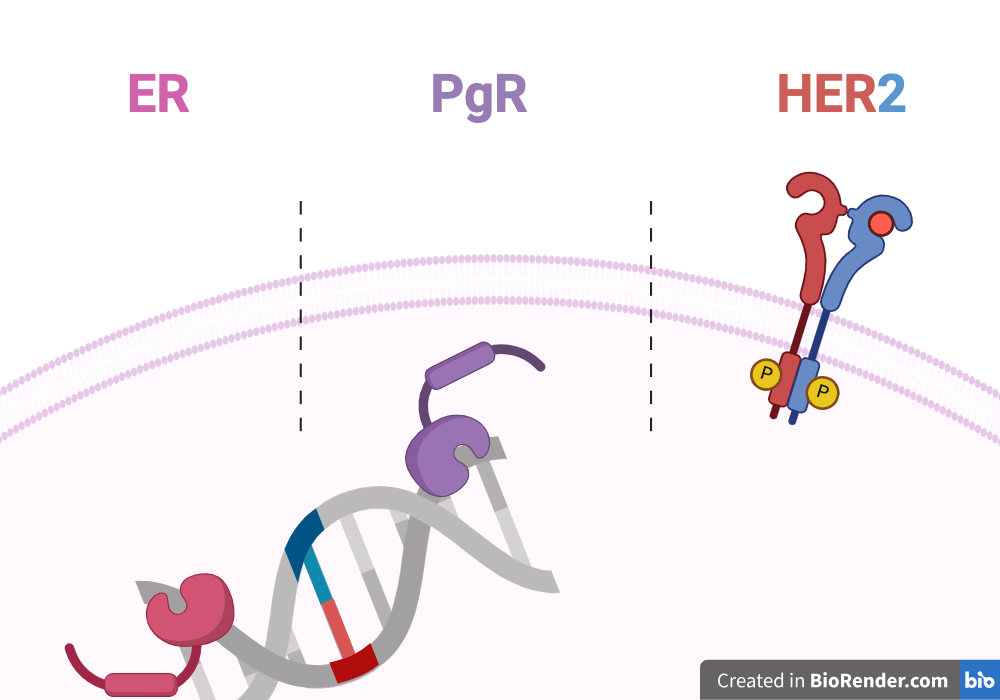
Grading
- älteste Methode zur Beurteilung der Tumorbiologie
- einfach und preiswert
- Hat eine Bedeutung für die Prognose
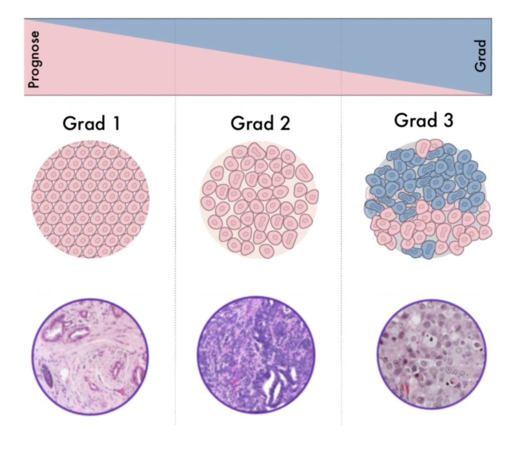
Zusätzlich kann
- die Proliferationsrate durch immunhistochemischen Nachweis von Ki67 bestimmt werden24
Wo ist der Krebs?
Erstmal lokal
Ein Tumor kleiner als 2 cm ohne, oder nur mikroskopisch befallenen Lymphknoten (T1, N0/N1mi) bedarf kein staging24
Staging wann?
Ohne Symptomatik für eine Metastasierung: ab dem UICC Stadium II mit erhöhtem Risiko sowie III und IV
Bei klinischer Verdacht: immer
Staging
- Lunge: CT Thorax
- Leber: Sonographie, CT Abdomen
- Skelett: Skelettszintigraphie
Sentinellymphknoten-Entfernung (SLNB)
- Bei palpatorisch und sonographisch unauffälligem Lymphknotenstatus
Wozu?

Alle wichtige Informationen
- Anamnese
- Alter
- Menopausenstatus
- Histologie
- TNM
- Grading
- Hormonrezeptorstatus
- Ki-67
Faktoren
- Prognostische
- pTNM-Status
- histologischer Typ
- histologisches Grading
- Ki-67
- Alter
- Prädiktive
- ER- / PR-Rezeptorstatus
- HER2/neu-Status
Warum?
Nervenschädigungen/Störungen der Sensibilität, Veränderungen des Blutbildes, Leberfunktionsstörungen, Erbrechen, Hautund Nagelreaktionen, Haarausfall, Wassereinlagerung (Ödeme), Ausschläge, Juckreiz, Fieber, Müdigkeit, Übelkeit, Entzündungen der Mundschleimhaut, Muskel- und Gliederschmerzen, Haut- und Nagelreaktionen, Durchfall, Beeinträchtigungen der Nierenfunktion, Schüttelfrost, Fieber, grippeähnliche Beschwerden, Infektionen, Hitzewallungen, Vaginalblutungen, Herzschaden, Zyklusstörungen, Katarakt, Corneatrübungen und/oder Retinopathie, Sehnervenentzündung, Wadenkrämpfe, Thrombose, Knochenschmerzen…
Wenig Risiko..
Geringes absolutes Risiko impliziert geringer absoluter Nutzen39
Therapie planen
- Operation
- Bestrahlung
- Systemische Therapie
Operation
Breusterhaltend
- identische Überlebensraten wie Mastektomie
- CAVE: RT
- Relation von Tumorgröße zu Brustvolumen
- Resektionsränder müssen im Gesunden verlaufen (R0)
Mastektomie
Indikationen
- Inkomplette Entfernung des Tumors
- Inflammatorisches Mammakarzinom
- Kontraindikationen zur Nachbestrahlung
- Wunsch der aufgeklärten Patientin
Bestrahlung
- BET/Post Mastektomie
- Fraktionierung
- Boostbestrahlung
- Lymphknoten
Nach brusterhaltender Operation
soll eine Bestrahlung durchgeführt werden.24
Rezidivrisiko
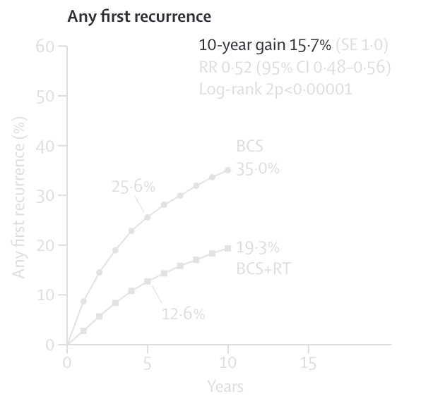
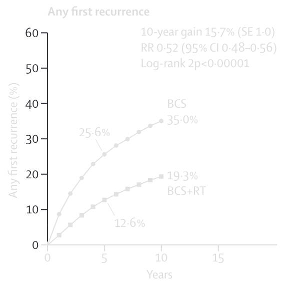
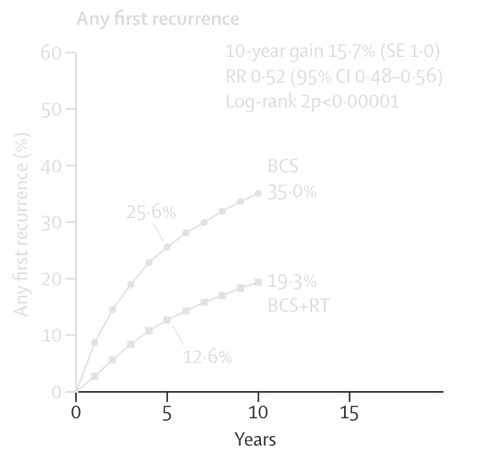
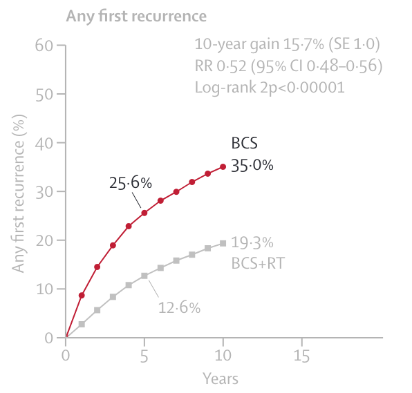
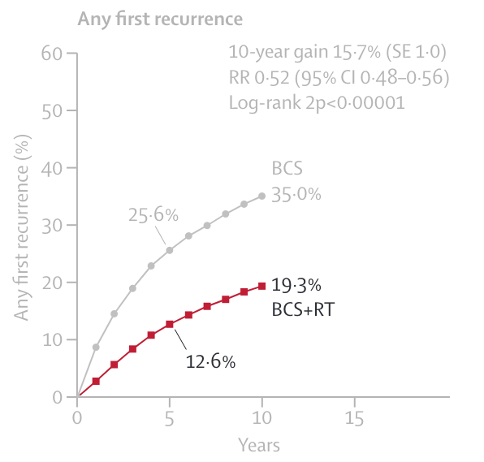
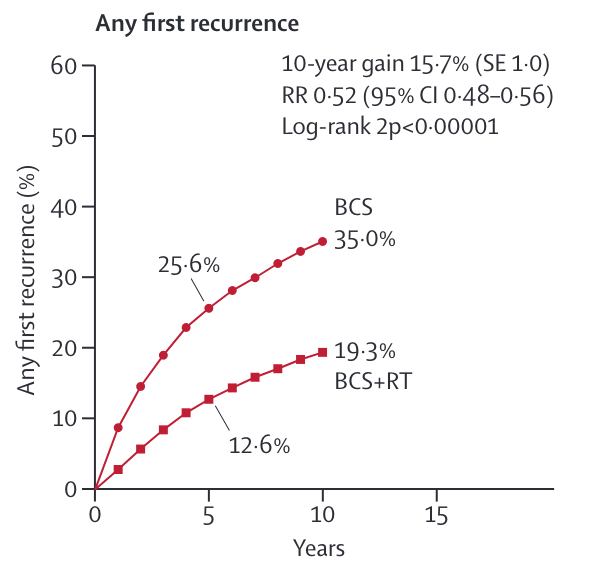
Early Breast Cancer Trialists’ Collaborative Group (EBCTCG)40
brustkrebsspezifische Mortalität
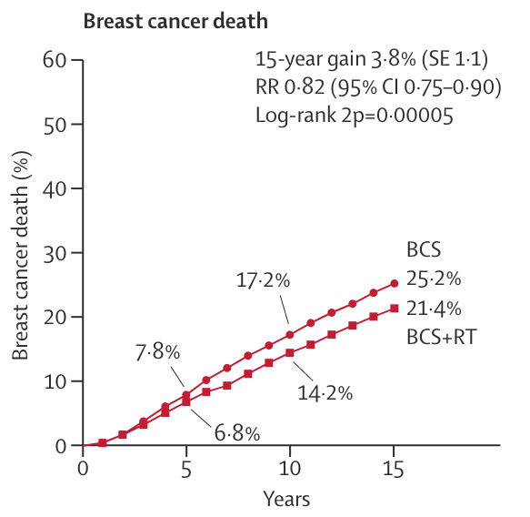
Early Breast Cancer Trialists’ Collaborative Group (EBCTCG)40
Postmastektomie-Radiotherapie
- Warum?
- Rezidiv
- Gesamtüberleben
- Wann?
- Indikation
Supra-/infraklavikulären Lymphknoten
- pN0 oder pN1mi
- 1-3 befallenen Lymphknoten
- mehr als 3 befallenen axillären Lymphknoten
Axilläre Lymphknoten
- 1-2 befallenen axillären Wächterlymphknoten
Systemische Therapie
- Endokrine Therapie
- Chemotherapie
- Antikörpertherapie
Endokrine Therapie
- Sollte bei >/=10% progesteronrezeptor-positive Tumorzellkerne
- Wird nach Abschluss der Chemotherapie begonnen
- Tamoxifen und Aromatasahemmer
- GnRH-Analoga
Chemotherapie
- bei HER2-positivem Brustkrebs
- bei dreifach negativem Brustkrebs
- bei Luminal B-Brustkrebs mit hohem Rückfallrisiko
- z.B. Grading G3, junges Erkrankungsalter (unter 35 Jahren) oder befallene Lymphknoten
- soll 18 bis 24 Wochen dauern
- Sollte mittels Taxan und Anthrazyklin erfolgen
Antikörper
Trastuzumab
Strahlentherapie
- Nach BE Operation
Boost
- Senkt die lokale Rezidivrate in der Brust
- Bewirkt keinen signifikanten Überlebensvorteil
Boost Indikation
- \(</=\) 50 Jahre alten Patientinnen und
- sollte bei \(>\) 51 Jahre alten Patientinnen nur bei erhöhtem lokalen Rückfallrisiko erfolgen
- G3
- HER2-positiv
- Tripelnegativ
- \(>\) T1
RT nach Mastektomie
- pT4
- pT3 pN0 R0 (Risikofaktoren)
- Lymphgefäßinvasion (L1)
- G3
- Prämenopausal
- Alter \(<\) 50 Jahre
- R1-/R2-Resektion
RT nach Mastektomie
- Bei mehr als 3 befallenen axillären Lymphknoten
- Bei 1-3 (erhöhtes Rezidivrisiko) vorliegt
- Tumorboard
Lymphabflussgebiete
- Verbessert das Gesamtüberleben in Untergruppen von Patientinnen
> 3 befallenen axillären LK’s
- RT sollte generell erfolgen
pN0 oder pN1
(Alle)
- Prämenopausal
- zentraler oder medialer Sitz
- G2-3
- ER/PgR-negativ.
Lymphabflussgebiete 1-3 befallenen LK’s
- zentraler oder medialer Sitz und (G2-3 oder ER/PgR-negativ)
- prämenopausal, lateraler Sitz und (G2-3 oder ER/PgR-negativ)
DCIS:
Vorstufe, Prämaligne, Risikoläsion, Stage 0
To treat or not to treat
DCIS
- Vor der Einführung des Brustscreenings nur selten diagnostiziert
- 5.500 pro Jahr
- Heterogene Erkrankung
- Unterschiedliche Malignitätspotential
Argumente
- Dagegen
- Brustkrebsspezifischen Langzeitmortalität 3,3% nach 20 Jahren
- Vor der Einführung des Brustscreenings nur selten diagnostiziert
- Viele Frauen hätten nie Symptome entwickelt12
- Übertherapie
Argumente
- Dafür
- Invasive Tumorrezidive ipsilaterale
- 25-60% DCIS entwickeln sich zu einem invasiven duktalen Karzinom (IDC)26
- geringe Sterblichkeit ist Ausdruck einer adäquaten Therapie
- Invasive Tumorrezidive ipsilaterale
Fazit
Histologisch und biologisch eine heterogene Erkrankung mit unterschiedlichem Malignitätspotential
Unterscheidung zwischen nicht-progredientem und progressivem DCIS ist aktuell nicht möglich
Leitliniengerechte Therapie
- Vollständige Exzision
- Adjuvante Radiotherapie
- Antihormonelle Therapie
Geschichte
- Only used after mastectomy in patients with high-risk disease
- Fifty years ago, BCT consisting of BCS combined with breast RT was highly experimental.
- equivalent survival.
- confirmed at 20-year follow-up
Factors
- Technologie
- Toxizität
- Biologische äquivalenz der Fraktionen
- Prävalenz, Demografie und Inzidenzraten:
- Kurzer Überblick über die Prävalenz, Demografie und Inzidenzraten der spezifizierten Krankheit, einschließlich etwaiger bemerkenswerter Trends oder Variationen in den Bevölkerungsgruppen.
- Risikofaktoren:
- Diskussion über gemeinsame Risikofaktoren, die mit der Entwicklung oder dem Fortschreiten der Krankheit verbunden sind, einschließlich genetischer Veranlagung, Umweltbelastungen, Lebensstilfaktoren und Begleiterkrankungen.
Verbesserung der Ergebnisse (10 Minuten)
- Screening:
- Diskussion über die Bedeutung von Screening-Programmen zur Früherkennung und Diagnose der Krankheit, einschließlich empfohlener Screening-Methoden und Intervalle.
- Behandlung:
- Erwähnung der verfügbaren Behandlungsoptionen für die Krankheit, einschließlich, aber nicht beschränkt auf
- Operation, Chemotherapie, Strahlentherapie und Immuntherapie.
- Betonung der Rolle multidisziplinärer Behandlungsansätze, die auf individuelle Patientenmerkmale und Krankheitsstadium zugeschnitten sind, um die Behandlungseffizienz und -ergebnisse zu optimieren.
- Erwähnung der verfügbaren Behandlungsoptionen für die Krankheit, einschließlich, aber nicht beschränkt auf
- Tumorboard:
- Erwähnung der Teilnehmer, einschließlich Onkologen, Chirurgen, Radiologen, medizinischen Physikern, Pathologen und anderen Fachleuten, die an multidisziplinären Entscheidungen beteiligt sind.
- Kurze Erklärung des Tumorboard-Prozesses, der in der Regel die Überprüfung einzelner Patientenfälle, die Diskussion von Behandlungsoptionen und die Formulierung personalisierter Behandlungspläne auf der Grundlage gemeinsamer Expertise und Konsens umfasst.
Diagnose und Staging (10 Minuten)
- Biopsietechniken:
- Bedeutung von Biopsietechniken zur Gewinnung von Gewebeproben für Diagnose und Staging.
- Bildgestützte Biopsietechniken:
- Sicherstellung einer präzisen Gewebeprobenentnahme für die Behandlungsentscheidung unter Verwendung bildgebender Verfahren.
Rolle der Strahlentherapie in der Behandlung (10 Minuten)
- Neoadjuvante, adjuvante und definitive Strahlentherapieansätze:
- Erklärung der neoadjuvanten Strahlentherapie, die vor der primären Behandlung (wie Operation oder Chemotherapie) verabreicht wird, um Tumoren zu verkleinern oder die Resektabilität zu verbessern.
- Diskussion über die Ziele der neoadjuvanten Strahlentherapie, einschließlich Tumorverkleinerung, Erleichterung der chirurgischen Resektion und mögliche Verbesserung langfristiger Ergebnisse.
- Adjuvante Strahlentherapie:
- Erklärung der adjuvanten Strahlentherapie, die nach der primären Behandlung (wie Operation oder Chemotherapie) verabreicht wird, um restliches Gewebe zu eliminieren und das Risiko eines lokalen Rückfalls zu verringern.
- Diskussion über die Ziele der adjuvanten Strahlentherapie, einschließlich Verbesserung der lokoregionalen Kontrolle und langfristiger Überlebensergebnisse.
- Definitive Strahlentherapie:
- Erklärung der definitiven Strahlentherapie, die als primäre Behandlungsmethode mit Heilungsabsicht verabreicht wird, oft in Fällen, in denen eine Operation nicht möglich oder bevorzugt wird.
- Diskussion über die Ziele der definitiven Strahlentherapie, die die Tumorkontrolle, Erhaltung der Organfunktion und Optimierung der Lebensqualität umfassen.
Bildgebende Verfahren für die Strahlentherapieplanung (15 Minuten)
- CT-Scan:
- Prinzipien der CT-Bildgebung für die Strahlentherapieplanung.
- Bedeutung einer genauen Patientenpositionierung und -immobilisierung für die Behandlung.
- MR-Planung:
- Nutzung von MRT in der Behandlungsplanung und seine einzigartigen Vorteile.
Grundlagen der Strahlentherapie (15 Minuten)
- Dosis:
- Erklärung der Strahlendosis und ihrer Messung in Gray (Gy).
- Faktoren, die die Dosisbestimmung beeinflussen, und ihre Bedeutung für die Behandlungsplanung.
- Fraktionen:
- Definition und Erklärung von Behandlungsfraktionen und ihre Rolle bei der Dosierung.
- Überblick über häufig verwendete Fraktionierungsschemata in der Strahlentherapie.
Nebenwirkungen der Strahlentherapie (10 Minuten)
- Epidemiologie:
- Häufigkeit von Nebenwirkungen bei Empfängern von Strahlentherapie.
- Klassifikation:
- Kategorisierung von Nebenwirkungen nach Schweregrad und betroffenen Geweben/Organen.
- Behandlung (Supportive Therapie):
- Überblick über unterstützende Therapien zur Bewältigung und Linderung von Nebenwirkungen, einschließlich Medikamenten, Interventionen und psychologischer Unterstützung.
Multidisziplinärer Ansatz in der Strahlentherapie (5 Minuten)
- Rolle des Strahlentherapeuten:
- Unterstützung von Radioonkologen, medizinischen Physikern und anderen Teammitgliedern bei bildgebenden Aufgaben.
- Zusammenarbeit mit medizinischen Physikern:
- Bedeutung von Teamarbeit und Kommunikation mit medizinischen Physikern bei der Behandlungsplanung und -durchführung.
Praktische Fähigkeiten für Strahlentherapeuten (15 Minuten)
- Patientenpositionierung und -immobilisierung:
- Techniken für eine genaue Patientenpositionierung und -immobilisierung während der Bildgebung und Behandlung.
- Bildverarbeitung und Datentransfer:
- Verfahren zur Verarbeitung von Bildgebung und Übertragung für die Behandlungsplanung.
- Qualitätssicherung und Gerätepflege:
- Maßnahmen zur Sicherstellung der Genauigkeit und Zuverlässigkeit von Behandlungssystemen.
Fallstudien und Diskussion (15 Minuten)
- Präsentation von Fallstudien, die Herausforderungen und Lösungen in der Behandlungsplanung veranschaulichen.
- Interaktive Diskussion und Problemlösungsübungen basierend auf realen Szenarien.
Frage-und-Antwort-Sitzung (5 Minuten)
- Gelegenheit für Teilnehmer, Fragen zu stellen und Konzepte zu klären.
1.
Zentrum Für Krebsregisterdaten (ZfKD) Im Robert Koch-Institut. Datensatz des ZfKD auf Basis der epidemiologischen Landeskrebsregisterdaten Epi2021_1, verfügbare Diagnosejahre bis 2019. Published online 2022. doi:10.18444/5.03.01.0005.0017.0001
2.
Koch-Institut R. Krebs in Deutschland für 2019/2020. Published online 2023. doi:10.25646/11357
3.
Krebs - Überlebensraten.
4.
Lukong KE. Understanding breast cancer – The long and winding road. BBA Clinical. 2017;7:64-77. doi:10.1016/j.bbacli.2017.01.001
5.
Retief FP, Cilliers L. Tumours and cancers in Graeco-Roman times. South African Medical Journal. 2001;91(4):344-348.
6.
Halsted W, Cleveland Burket W. Surgical Papers Vol. 1. Baltimore : The Johns Hopkins Press; 1924.
7.
Georges C. PREMIERS ESSAIS DU TRAITEMENT DU CANCER PAR LES RAYONS X. Published online 1907.
8.
Mank AM. Zufriedenheit und Lebensqualität von Brustkrebspatientinnen nach Brusterhaltung – zukünftige Beratungsstrategien für die präoperative Patientenaufklärung. PhD thesis. Justus-Liebig-Universität Gießen; 2013.
9.
Mayo Clinic. Radiation therapy for breast cancer.
10.
Patsalidis M. Brustkrebs mit 28 Jahren: "Die Angst ist immer da". Published online October 2018.
11.
Krebsforschungszentrum K Deutsches. Antihormontherapie: Stoppsignal für das Tumorwachstum.
12.
Berger-Höger B, Steckelberg A, Gerlach A, Mühlhauser I. Eine Entscheidungshilfe für Frauen mit einem DCIS.
13.
Albert US, Fehm T, Fey H, et al. Patientinnenleitlinie: Brustkrebs im frühen Stadium. (Medizinischen Fachgesellschaften e. V, Deutschen Krebsgesellschaft e. V., Stiftung Deutsche Krebshilfe, eds.).; 2018:215.
14.
American Cancer Society. Understanding Your Pathology Report: Breast Cancer.
15.
Wilson GM, Dinh P, Pathmanathan N, Graham JD. Ductal Carcinoma in Situ: Molecular Changes Accompanying Disease Progression. Journal of Mammary Gland Biology and Neoplasia. 2022;27(1):101-131. doi:10.1007/s10911-022-09517-7
16.
Evans DG, Barwell J, Eccles DM, et al. The Angelina Jolie effect: How high celebrity profile can have a major impact on provision of cancer related services. Breast cancer research: BCR. 2014;16(5):442. doi:10.1186/s13058-014-0442-6
17.
Katz TA. Potential Mechanisms underlying the Protective Effect of Pregnancy against Breast Cancer: A Focus on the IGF Pathway. Frontiers in Oncology. 2016;6:228. doi:10.3389/fonc.2016.00228
18.
Advani P, Moreno-Aspitia A. Current strategies for the prevention of breast cancer. Breast Cancer (Dove Medical Press). 2014;6:59-71. doi:10.2147/BCTT.S39114
19.
Krebsforschungszentrum D. Brustkrebs-Früherkennung: Mammographie-Screening und Abtasten.
20.
Breast Exam. Stanford Medicine 25.
21.
Bayerns (KVB) KV. Mammographie-Screening Bayern. Mammographie-Screening Bayern.
22.
Sauer G, Kreienberg R, Kurzeder C, Schreer I. Bedeutung der BI-RADS-Klassifikation in der Mammadiagnostik. Die Gynäkologie. 2006;(7).
23.
The Radiology Assistant : Bi-RADS for Mammography and Ultrasound 2013.
24.
S3-Leitlinie Mammakarzinom. S3-LeitlinieMammakarzinom. Published online 2021:467.
25.
Apesteguía L, Pina LJ. Ultrasound-guided core-needle biopsy of breast lesions. Insights into Imaging. 2011;2(4):493-500. doi:10.1007/s13244-011-0090-7
26.
Wang J, Li B, Luo M, et al. Progression from ductal carcinoma in situ to invasive breast cancer: Molecular features and clinical significance. Signal Transduction and Targeted Therapy. 2024;9(1):1-28. doi:10.1038/s41392-024-01779-3
27.
Bodungen VV, Bitto FF, Harbeck N, et al. Duktales Carcinoma in situ (DCIS): Zeit für einen Wandel? Deutsches Ärzteblatt Online. Published online February 2016. doi:10.3238/PersOnko/2016.02.12.05
28.
Deutsche Krebsgesellschaft. Brustkrebs - Klassifikation. Brustkrebs Diagnose: Klassifikation.
29.
Neubert M, Petzold A, Wimberger P. Der isolierte Morbus Paget der Mamille. In: Senologie - Zeitschrift für Mammadiagnostik und -therapie. Vol 15. Georg Thieme Verlag KG; 2018:100. doi:10.1055/s-0038-1651770
30.
American Cancer Society. What Is Breast Cancer?
31.
Urban H, Petzold A, Meisel C, Kopp J, Friedrich K. Das Angiosarkom der Mamma – der seltene Fall. Senologie - Zeitschrift für Mammadiagnostik und -therapie. 2016;13(2):A138. doi:10.1055/s-0036-1583460
32.
van Dooijeweert C, van Diest PJ, Ellis IO. Grading of invasive breast carcinoma: The way forward. Virchows Archiv. 2022;480(1):33-43. doi:10.1007/s00428-021-03141-2
33.
Zahoor S, Haji A, Battoo A, Qurieshi M, Mir W, Shah M. Sentinel Lymph Node Biopsy in Breast Cancer: A Clinical Review and Update. Journal of Breast Cancer. 2017;20(3):217-227. doi:10.4048/jbc.2017.20.3.217
34.
Chatterjee A, Serniak N, Czerniecki BJ. Sentinel Lymph Node Biopsy in Breast Cancer: A Work in Progress. Cancer journal (Sudbury, Mass). 2015;21(1):7-10. doi:10.1097/PPO.0000000000000090
35.
Jayasinghe UW, Taylor R, Boyages J. Is age at diagnosis an independent prognostic factor for survival following breast cancer? ANZ Journal of Surgery. 2005;75(9):762-767. doi:10.1111/j.1445-2197.2005.03515.x
36.
Adami HO, Malker B, Meirik O, Persson I, Bergkvist L, Stone B. Age as a prognostic factor in breast cancer. Cancer. 1985;56(4):898-902. doi:10.1002/1097-0142(19850815)56:4<898::AID-CNCR2820560433>3.0.CO;2-L
37.
Janni W, Müller V. Brustkrebs Patientenratgeber Zu Den AGO-Empfehlungen 2019. Kommission Mamma der Arbeitsgemeinschaft Gynäkologische Onkologie e.V. (AGO)
38.
Chew HK. Adjuvant therapy for breast cancer. Western Journal of Medicine. 2001;174(4):284-287.
39.
Group (EBCTCG) EBCTC. Comparisons between different polychemotherapy regimens for early breast cancer: Meta-analyses of long-term outcome among 100 000 women in 123 randomised trials. The Lancet. 2012;379(9814):432-444. doi:10.1016/S0140-6736(11)61625-5
40.
Early Breast Cancer Trialists’ Collaborative Group (EBCTCG), Darby S, McGale P, et al. Effect of radiotherapy after breast-conserving surgery on 10-year recurrence and 15-year breast cancer death: Meta-analysis of individual patient data for 10,801 women in 17 randomised trials. Lancet (London, England). 2011;378(9804):1707-1716. doi:10.1016/S0140-6736(11)61629-2
41.
van Seijen M, Lips EH, Thompson AM, et al. Ductal carcinoma in situ: To treat or not to treat, that is the question. British Journal of Cancer. 2019;121(4):285-292. doi:10.1038/s41416-019-0478-6
42.
Harris JR. Fifty Years of Progress in Radiation Therapy for Breast Cancer. American Society of Clinical Oncology Educational Book. 2014;(34):21-25. doi:10.14694/EdBook_AM.2014.34.21